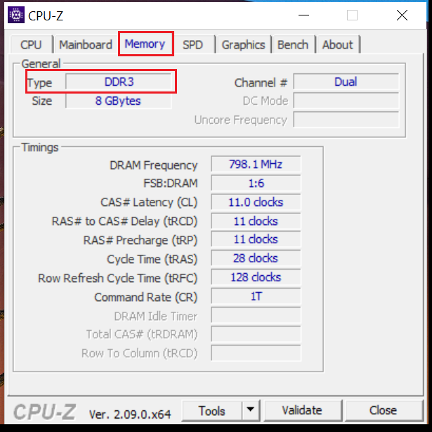

LIMPANDO O LIXO AMAADOR QUE POSTAM NAS REDES SOCIAIS.
DOCUMENTO TÉCNICO 01: A VERDADE SOBRE CMD, POWERSHELL E COMANDOS
1. A Ferramenta e o Acesso (ADM)
CMD (Prompt de Comando): Ferramenta clássica baseada em texto. Focada em compatibilidade e comandos diretos de sistema.
PowerShell: Framework moderno e poderoso. Trabalha com "objetos", permitindo automações profundas que o CMD não alcança.
Por que EXECUTAR COMO ADM? Ambos precisam de privilégios de Administrador para acessar e modificar arquivos protegidos nas pastas System32 e no Registro. Sem esse nível de acesso, o Windows bloqueia o comando por segurança, tornando-o inútil para manutenção real.
2. Procedimento Padrão: CHKDSK vs. SFC
Regra de Ouro: Primeiro conserta o terreno (Disco), depois pinta a casa (Arquivos).
CHKDSK /F /R (Vem primeiro):
- /f (Fix): Corrige erros lógicos no índice do disco.
- /r (Recover): Localiza setores físicos defeituosos (bad blocks), tenta recuperar os dados e isola a área para o Windows não usá-la mais.
- Uso: Essencial para estabilizar o hardware antes de mexer no software.
SFC /SCANNOW (Vem depois):
- Função: Verifica se os arquivos do Windows (.dll, .exe) estão corrompidos e os substitui por cópias limpas.
- Uso: Repara o sistema operacional sobre a base física já corrigida pelo CHKDSK.
3. A Lista dos "Comandos Inúteis" (Vícios de Redes Sociais)
Comandos que gurus usam para impressionar, mas que não trazem performance real:
No CMD:
color a + dir /s: Apenas muda a cor para verde e lista pastas. Puro teatro visual.ipconfig /flushdns: Limpa o cache de nomes de sites. Não aumenta a velocidade da fibra.gpupdate /force: Atualiza políticas de rede empresarial. Não injeta velocidade no PC doméstico.tree: Mostra a estrutura de pastas graficamente. Estético, não funcional.defrag c: /u(em SSDs): Perigoso. Desgasta as células do SSD sem necessidade técnica.
No POWERSHELL:
- Scripts de "Debloat": Prometem limpar o Windows, mas costumam quebrar funções e jogos ao remover bibliotecas essenciais.
- Repair-WindowsImage...: Comando DISM. Só tem utilidade se o Windows estiver quebrado; em sistema saudável, é perda de tempo.
- Disable-MMAgent -MemoryCompression: Desativa a compressão de memória. Em máquinas com pouca RAM, causa lentidão extrema.
- Get-Service | Where-Object...: Apenas uma forma difícil de ver o que já está no Gerenciador de Tarefas. Usado para assustar o leigo.
OS VÍCIOS DO MENU EXECUTAR (WIN+R): O LIXO DA INTERNET
1. msconfig (O erro mais perigoso)
O que pregam: Dizem que você deve ir em "Inicialização do Sistema" > "Opções Avançadas" e marcar a caixa "Número de processadores" selecionando o valor máximo para "desbloquear" o PC.
Realidade: Isso é um vício gravíssimo. O Windows já utiliza todos os núcleos por padrão. Essa caixa serve para desenvolvedores limitarem o hardware para testes. Ao marcar isso, você engessa o kernel do Windows, podendo causar telas azuis, impedir o funcionamento do Turbo Boost e gerar gargalos severos de processamento.
2. netplwiz (A falsa velocidade)
O que pregam: Dizem que esse comando acelera o boot do Windows drasticamente e ajuda a identificar "invasores" na conta.
Realidade: Ele apenas gerencia o login automático. Não reduz o tempo de carregamento do sistema (Kernel). O único resultado real é remover a barreira de proteção física (a senha), deixando o computador vulnerável a qualquer pessoa que ligue a máquina.
3. Prefetch (O exterminador de performance)
O que pregam: Dizem que a pasta Prefetch é um "lixo acumulado" que trava o Windows e deve ser esvaziada diariamente.
Realidade: O Prefetch é o mapa de carregamento do processador. Ele guarda o rastro dos programas que você mais usa para que eles abram mais rápido. Ao apagar, você força o processador a trabalhar o dobro para reconstruir esses mapas. Os arquivos ali têm apenas alguns KB e não pesam nada no sistema.
4. Temp e %Temp% (A ilusão do FPS)
O que pregam: Vendem a ideia de que limpar essas pastas é a solução definitiva para parar a lentidão em jogos e aumentar o FPS.
Realidade: Esses arquivos ocupam apenas espaço passivo no disco. Se o seu SSD ou HD não está com 100% de lotação, apagar esses arquivos tem efeito zero na taxa de quadros (FPS) ou na velocidade de processamento da CPU e GPU. A pasta Temp é a lixeira do Sistema, enquanto a pasta %Temp% é o rascunho do Usuário. Limpá-las apenas recupera espaço e não aumenta o poder do processador.
5. services.msc (O desativador de funções)
Realidade: Desativar serviços sem conhecimento técnico quebra funções vitais como a fila de impressão, a busca do Windows, atualizações de segurança e a sincronização de contas. O ganho de memória RAM em máquinas modernas é irrelevante perto da instabilidade gerada.
6. cleanmgr (Uso distorcido)
Realidade: É uma ferramenta útil para espaço em disco, mas os gurus a vendem como solução de velocidade. Limpar a lixeira ou arquivos temporários antigos não torna um processador lento em um processador rápido.
7. O CASO DO MRT: FERRAMENTA REAL VS. O USO AMADOR
A Realidade Técnica: O MRT não é um antivírus. Ele é uma ferramenta de pós-infecção, atualizada mensalmente pela Microsoft para remover apenas ameaças específicas e conhecidas que já estão ativas no sistema. Ele não oferece proteção em tempo real.
O Lixo Amador: "Vender" o MRT como substituto de uma proteção ativa ou como um "segredo de performance" é um erro técnico. Ele é apenas um utilitário de varredura pontual.
MAPA DA BAGUNÇA: O LIXO DAS CONFIGURAÇÕES VIA "PESQUISAR"
Memória Virtual (pagefile.sys) - Atalho: sysdm.cpl
O que é: Uma extensão da RAM no disco (SSD/HD) para evitar travamentos quando a memória física lota.
Uso Profissional: Manter a opção "Gerenciar automaticamente" marcada. O Windows ajusta o tamanho conforme a demanda real, garantindo que o arquivo fique apenas na unidade mais rápida (SSD) e nunca em HDs de backup.

OS OUTROS REFÚGIOS DO LIXO TÉCNICO: REGISTRO, TAREFAS E BIOS
1. GERENCIADOR DE TAREFAS (Prioridades de Processo)
O Vício: Definir Prioridade como "Tempo Real" ou "Alta". Realidade: O Windows gerencia isso de forma inteligente. Forçar "Tempo Real" faz o CPU ignorar drivers de mouse/teclado, causando travamentos (stuttering).
2. EDITOR DO REGISTRO (Regedit)
O Vício: Criar chaves "mágicas" para RAM ou rede. Realidade: O Registro é o cérebro do Windows. Tutoriais de internet sem critério técnico são a maior causa de Telas Azuis (BSOD).
3. CONFIGURAÇÕES DE BIOS (Ajustes de "Guru")
O Vício: Alterar voltagens ou XMP em placas de entrada. Realidade: Frequentemente ignora a temperatura real e a qualidade física dos componentes, causando degradação do hardware.
DOCUMENTO TÉCNICO 02: HARDWARE REAL: ARQUITETURAS E BARRAMENTOS
2.1 Identificação de Placas e Gerações
- Séries H61 e H81: Equipamentos de 2ª a 4ª Geração Intel (DDR3).
- Série H110: A base sólida da 6ª Geração (DDR4). Suporte nativo a SSDs.
- Gerações Avançadas (12ª Gen+): Onde o padrão DDR5 torna "otimizações" de software do passado irrelevantes.
2.2 Laudo Técnico (Análise CPU-Z)

CONCLUSÃO TÉCNICA FINAL
A verdadeira performance vem de hardware bem planejado e peças que conversam entre si na mesma voltagem e frequência. O conhecimento técnico é o que separa um PC problemático de uma ferramenta de trabalho confiável.